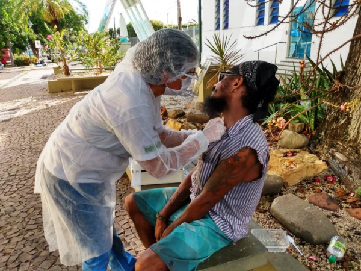
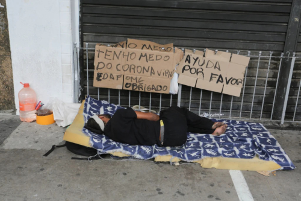

Com a repentina mudança de realidade, o mundo começou a passar por várias situações de estresse, preocupação e, principalmente, a falta de dinheiro. Um problema nos dias atuais é a situação dos moradores de rua, que por não terem acesso direto à higiene, ficam mais suscetíveis a doenças provenientes do ambiente que estão, especificamente, da Covid-19. Ou seja, com o início da pandemia, situações que já eram frequentes começaram a aparecer cada vez mais no cotidiano, de uma forma mais intensificada, no caso, mais pessoas começaram a morar na rua e a ter menos acesso aos direitos dos cidadãos.
A situação dos moradores é preocupante. Segundo o site Estado de Minas, o número de pessoas desempregadas e moradores de ruas duplicaram nessa pandemia. Muitas pessoas, são pais muito cedo e têm crianças para alimentar. O site também afirma que uma instituição distribui quase 15 mil máscaras por mês. Mostrando que essas pessoas não conseguem manter uma higiene, boa por causa da falta de dinheiro e a desinformação. Além disso, o número de moradores de rua agravou no início da pandemia de forma contínua. Tatiana Dias, representante do Instituto de Pesquisa Econômica Aplicada (Ipea), estima que entre fevereiro e março do ano passado, onde houve uma maior preocupação do processo de contato com a pandemia, 221 mil pessoas estavam em situação de rua.

A falta de dinheiro trouxe vários problemas para os brasileiros, sendo elas: dificuldades para pagar aluguel, para comprar comida, para pagar as contas e etc. Muitas pessoas tiveram que sair de suas casas e passaram a morar nas ruas, e isso foi realmente muito preocupante, pessoas passando fome, pessoas morrendo com coronavírus. Mas sempre há uma pequena esperança, alguns grupos de pessoas começaram a fazer ONGS para distribuir alimentos, roupas, cobertos para moradores de rua. Também com a ajuda do governo muitos puderam continuar em suas casas e receberam alimentos e produtos higiênicos.
Com a crise econômica, que foi piorada pela pandemia do Covid-19, houve o aumento da população de rua. Devido a vulnerabilidade dessas pessoas quanto às condições de saúde, higiene e alimentação, é imprescindível que haja a mobilização da sociedade e do poder público em promover medidas adequadas para prevenção desta doença e minimizar o sofrimento nesta população que já encontra-se tão fragilizada, que como não possuem políticas públicas de saúde e proteção social, ficam em níveis humanitários precários devido ao descaso.
